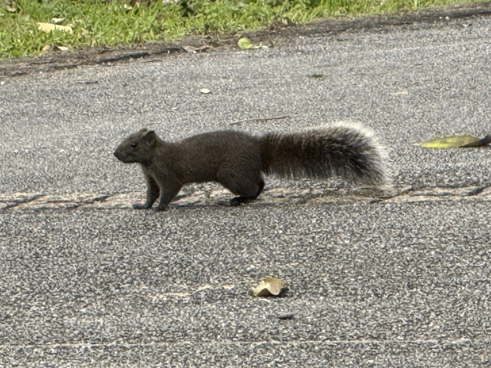
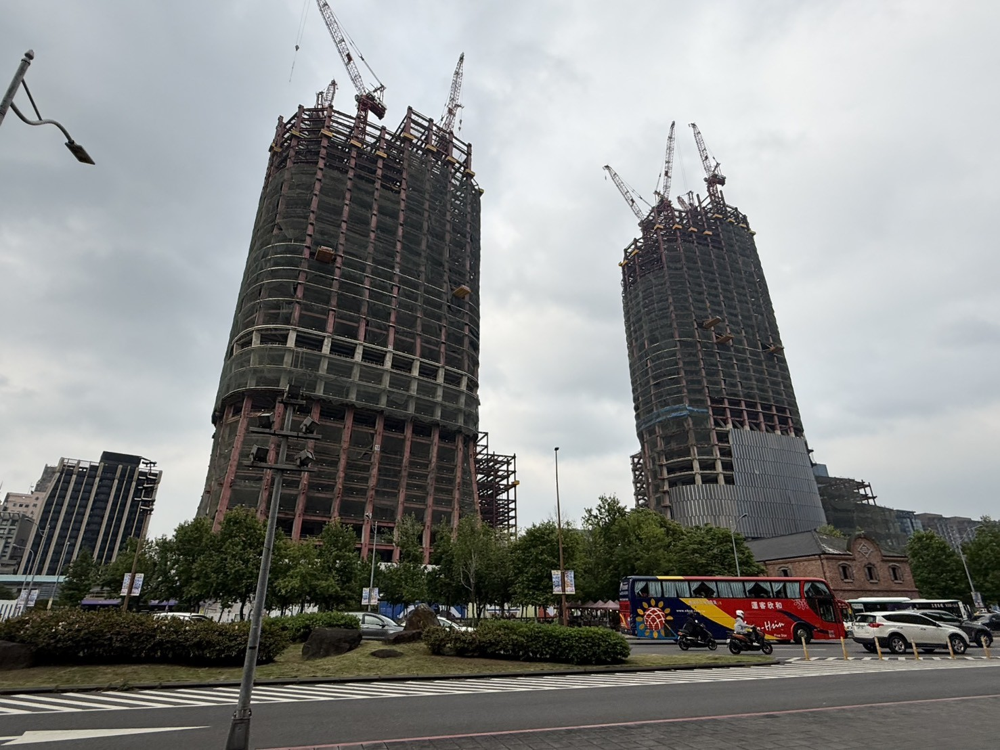
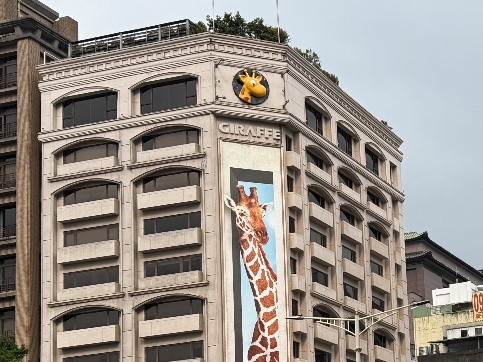
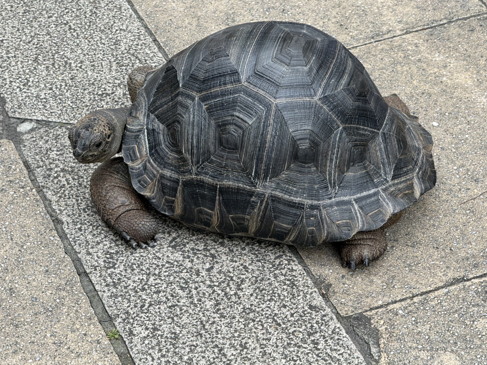
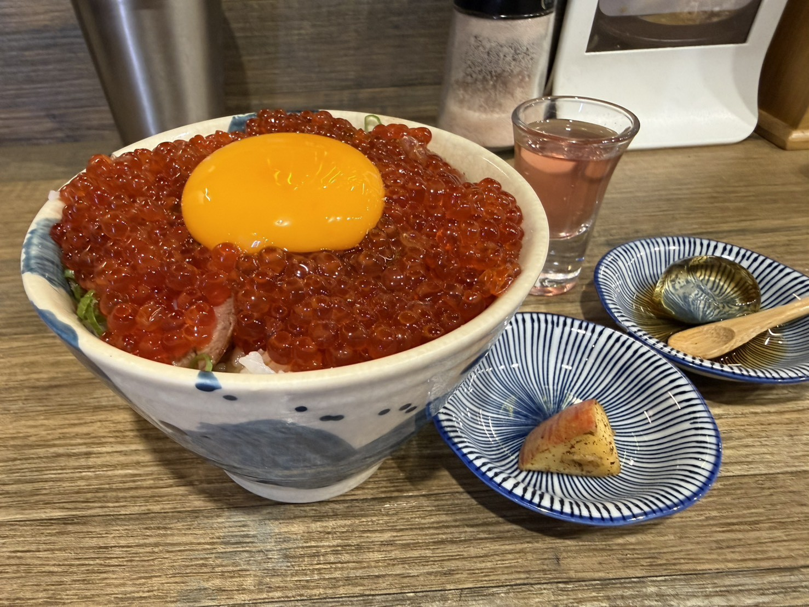
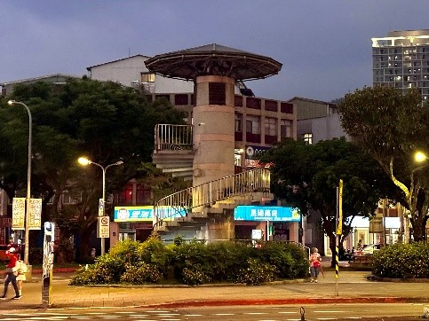
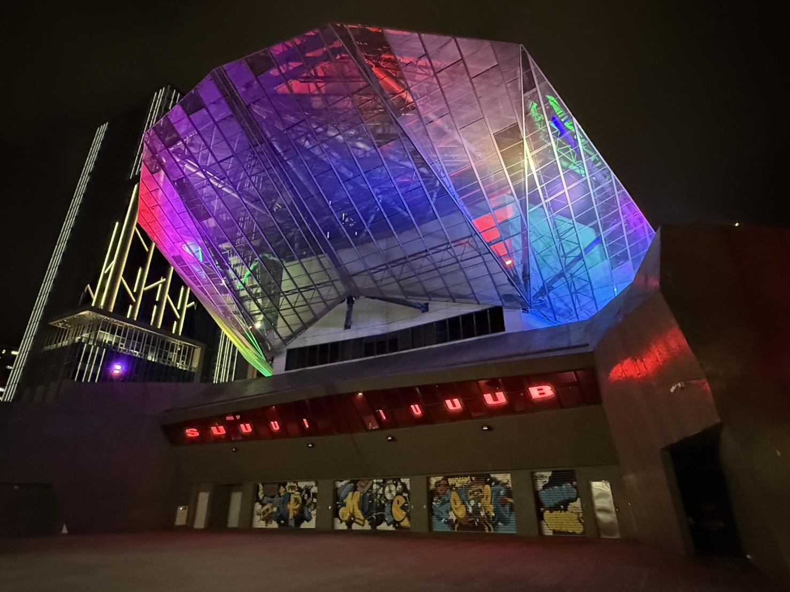
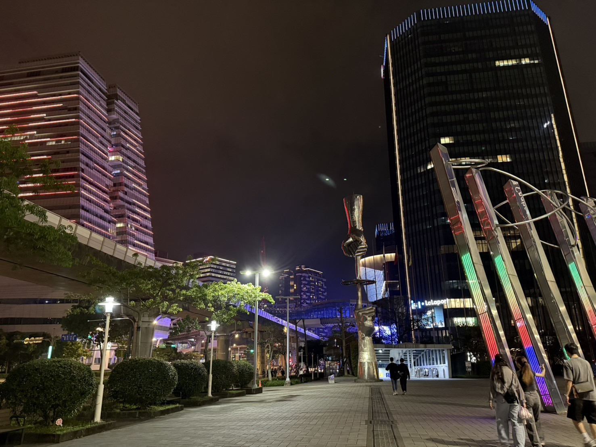
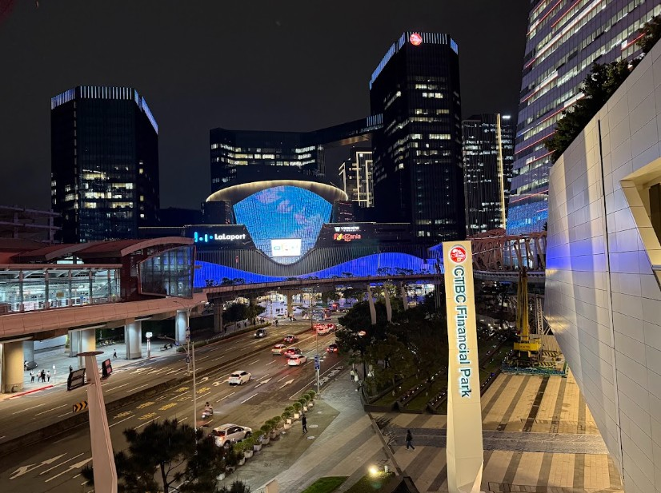
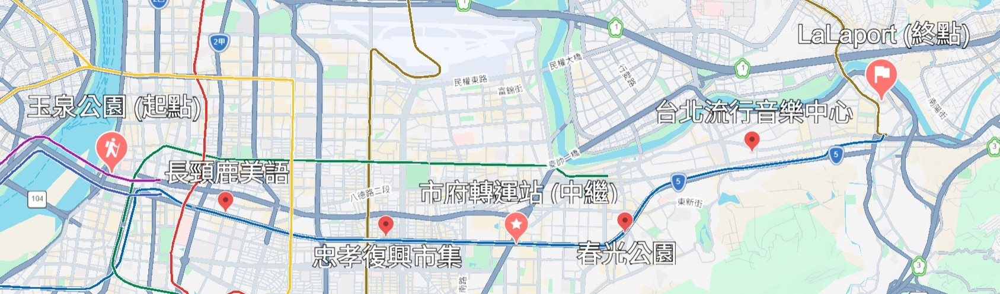

一句話引發的荒謬企劃
有天跟朋友聊天，對方無意間提到「忠孝東路走九遍」。 讓我突然想到：如果從忠孝西路的起點出發，走完忠孝西路一、二段，再接上忠孝東路一到七段，不就正好是走了九段，也就是走了九遍嗎？
我還真的出發了
平常最大的興趣就是散步。不論是都市、市郊、山林、海岸，我都喜歡用徒步行走的方式，享受高自由度的慢速探索。
開展「忠孝東路走九遍」企劃的前一個月，我完成了橫越草嶺古道的挑戰。這次決定換成以都市為主題展開長征。而且這次的路線不像草嶺古道是山林，忠孝東路沿路都有商店和捷運站，想要補給或是戰略性撤退，通通不成問題。
三萬步沿途紀錄
| 節點 | 沿途所見 | 隨拍 |
|---|---|---|
| 1 (Start) | 行程的起點是忠孝西路二段河堤邊的玉泉公園。 看到了一隻松鼠，但牠看起來似乎不想跟我一起走到南港。 |  |
| 2 | 來到北車一帶，看到建設中的台北雙子星，有點期待～ 不知道下次再挑戰一次這條路線時，它是不是已經完工了。 |
 |
| 3 | 善導寺附近的長頸鹿美語。這讓我想起同事說的冷笑話：哪一條街永遠不會下雨？ 答案是芝麻街美語。 因為芝麻街沒雨。 |
 |
| 4 | 忠孝復興附近市集拍到的大烏龜。 但牠看起來跟玉泉公園的松鼠一樣，沒有徒步走到南港的打算。 |
 |
| 5 | 如果用距離來算，市政府差不多就是行程的中繼點。 沒吃午餐就出發了的我，於是決定先吃第一份晚餐。 對，第一份！ |
 |
| 6 | 接近後山埤站的春光公園。 我不知道這個長得像巨大蘑菇的建築是做什麼用的。 總之，成功吸引了目光。 |
 |
| 7 | 到南港的時候太陽下山了。 北流的燈光很炫，但不知怎地也有一種面對最終 Boss 的壓迫感。 |
 |
| 8 | 路程來到尾聲，LaLaport 就在不遠之處。 看著中信軟體園區還有南港展覽館的燈光，想起了尾牙的夜晚。 |
 |
| 9 (End) | 成功抵達終點：南港 LaLaport。
當天只顧著進 LaLaport 吃第二份晚餐，所以這張是後來補拍的。 |
 |
走完了。所以這樣算九遍嗎？
走完後，意外地沒有想像中的熱血沸騰，但走到 LaLaport 之後還是很不爭氣地吃了第二份晚餐。
才說沒什麼熱血沸騰的感覺，禮拜一卻還是很興奮地跟同事炫耀。問說：「忠孝西路的兩段，加上忠孝東路的七段，這樣算不算忠孝東路走九遍？」 很遺憾，我得到的答案是：「不算喔。」
這裡沒有投票功能。但我還是想問問大家：
「這樣到底算不算走了九遍？」
路線示意圖
 |
從玉泉公園出發，沿忠孝西路、忠孝東路一路向東，最後抵達南港 LaLaport。
步行距離約 12.3 公里，走走停停花了大概 6 小時；主路段大致和捷運板南線重合。
（底圖來源：Google Earth；地理圖針：使用Google Earth內建功能進行標示）
長征路線回顧
這條路線很適合第一次嘗試 City walk 的人。大部分路段都與捷運平行，沿途不缺便利商店、餐廳和適合休息的地方。體力不支的時候，隨時都能稍歇。或是覺得沒事幹麻自找麻煩，也可以直接跳上捷運回家洗澡睡覺。
相較於山林古道，最大的挑戰大概不會是迷路，而是經過了各式各樣的店家跟攤販，而開啟了逛街副本。
當天最後累積超過三萬步。回顧這整段忠孝西路/東路，才發現平常搭捷運一站站呼嘯而過的地方，還真的可以靠行走串聯起來。
我想對我來說，散步的樂趣不只是在於突破步數紀錄或造訪新景點。
而是可以用最輕鬆的步調，重新認識那些原本以為早就很熟悉的城市角落。